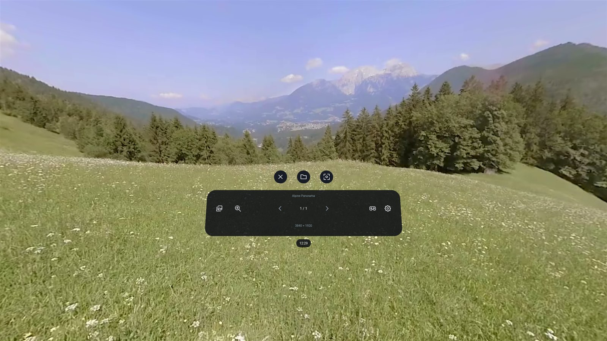
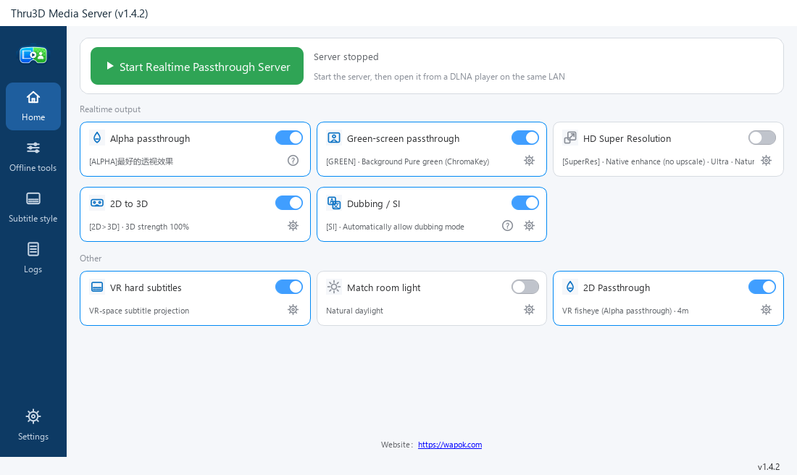

People beyond the screen.
AI removes the background from supported 180° videos, bringing people into your real surroundings. No green screen needed.
A new dimension for your media
Bring videos into your space. Rediscover photos in 3D. Meet the player and server that open up your own media.
Two independent apps. Even more possibilities together.


Your standalone VR player for videos and photos. AI runs right on your headset, so you can start with the media you already have.
AI removes the background from supported 180° videos, bringing people into your real surroundings. No green screen needed.
Turn everyday 2D videos and photos into stereoscopic 3D. Adjust the depth to find your perfect view.
Local files, SMB, WebDAV, DLNA, Emby, Jellyfin, XBVR and Stash. Browse and sign in inside VR.
Transform your local video library with the power of your GPU. Stream over DLNA to Thru3D or another compatible VR player, or save the results for later.
Get the ServerGPU background removal with Alpha or green-screen output.
Add stereo depth to flat videos, live or offline.
Enhance supported 2D and VR video with NVIDIA RTX Video.
Generate videos ahead of time and keep the output.
Keep subtitles in the stream, with adjustable styles.
Mix your matching interpretation track into playback.
Choose your own setup
Let your PC handle demanding processing while you enjoy the results in your headset. Your library stays on your devices.
Add video folders to Server on your PC.
Use Alpha passthrough for Thru3D Player, or choose another supported mode.
On the same local network, open Player's DLNA library and select Server.
Server also works with compatible DLNA players. Match the output to the player and version you use. Thru3D Player uses Alpha passthrough.
| Player | Alpha | Gray green screen | ChromaKey |
|---|---|---|---|
| Thru3D Media Player | Supported | — | — |
| SKYBOX 2.0.2 Preview | Supported | — | Supported |
| Moon Player | — | Supported | Supported |
| 4XVR | Supported | — | Supported |
| DeoVR | Supported | — | Supported |
| HereSphere | Supported | — | Supported |
Your next dimension starts here
Pick the app that fits your setup. You can add the other whenever you like.
Your videos and photos, right in your headset.
View on MetaThe Meta store release is pending. Source code and build instructions are available on GitHub.
Transform and share your PC video library.
Download ServerCheck the release page for the available version and package details.
No. Media Player plays local and network media independently, with AI processing on the headset. Media Server works on Windows with compatible DLNA players and offline tools. You can use either app, or combine them.
Player has separate QUEST and PICO builds, targeting Quest 2 and PICO Neo3 or newer. Features and AI performance vary by device and content. The standard OpenXR Android build is experimental and requires a compatible runtime; it is not a promise of support for every headset.
Windows 10 or 11 and an NVIDIA GPU for GPU processing. RTX 20 series or newer and at least 6 GB of VRAM are recommended for common realtime workflows. High-quality offline processing can need substantially more VRAM; see the project documentation for each mode.
Player's background removal is for supported 180° videos; its depth conversion is for flat mono videos and photos. AI results depend on the source and device. When streaming passthrough from Server to Thru3D Player, choose Alpha output. Server can also generate green-screen output for other compatible players.